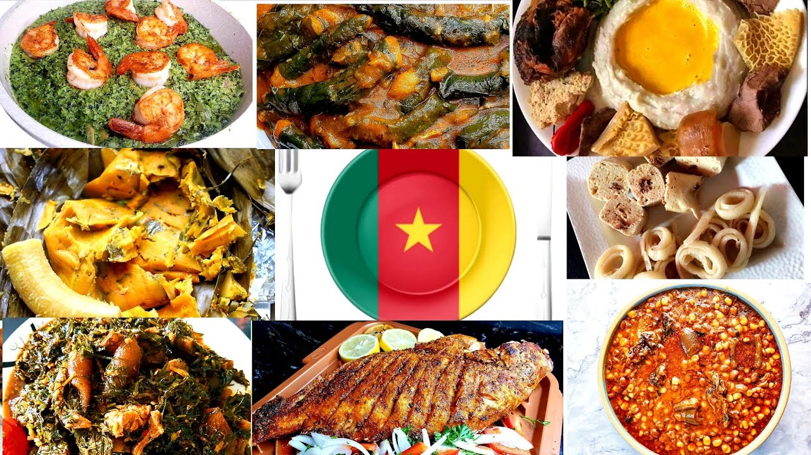

Admin
AFOOD Restaurant
Home
Menu
Ndole(better leaves, peanuts, smoke fish, meat)
OKOK(okok leaves, grilles peanut, sugar, palm oil)
Puff puff and Beans(flour, sugar, red beans)
Poisson Braise(grilled fish with spices)
Taro and Yellow Soup
Reservations
Contact
Welcome to AFOOD Restaurant
Here you can find all flavors and tates of the world!
